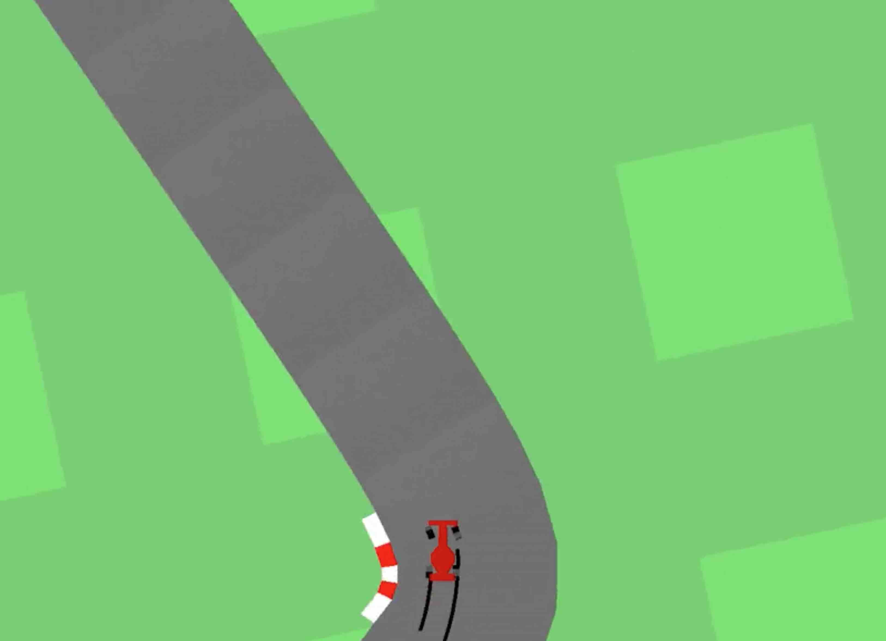
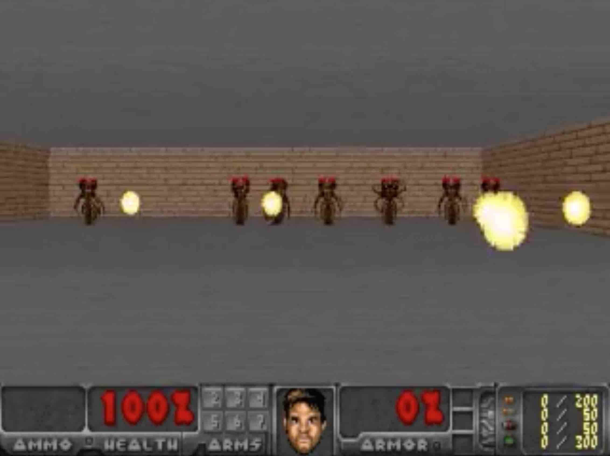
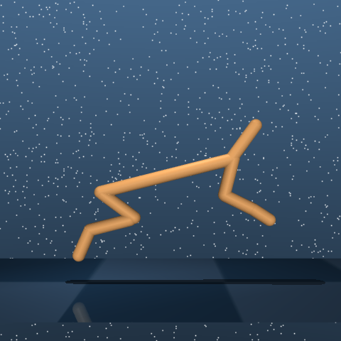
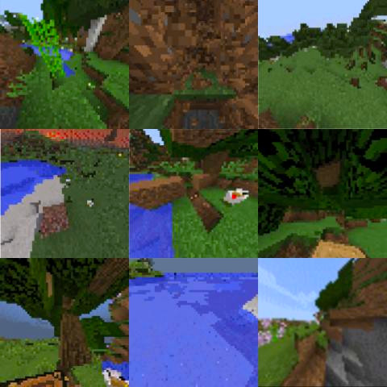
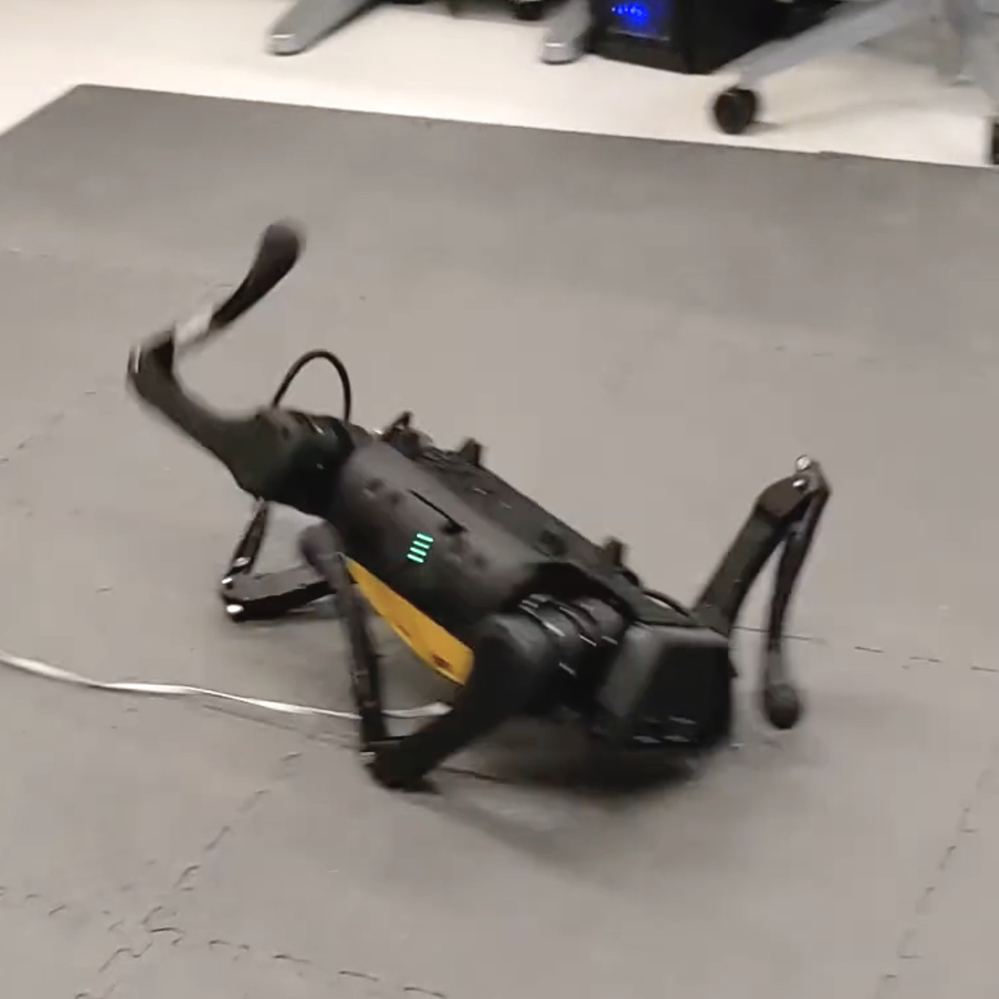

世界模型 · 第 1 期 · 2018 → 2023
梦的开始
World Models → PlaNet → Dreamer → DayDreamer：在模型的梦里训练策略
可lip





00这条线
六篇论文，五年
重点讲第一篇和上真机的那一篇，中间几篇讲改进的思路
2018-03
World Models
VAE + RNN + 867 参数控制器
第一次在梦里训策略
2018-11
PlaNet
RSSM
在 latent 里规划
2019-12
Dreamer v1
在想象里训 actor-critic
2020-10
Dreamer v2
离散 latent
Atari 达人类水平
2022-06
DayDreamer
同一套算法
上 4 台真机
2023-01
Dreamer v3
一套超参
150+ 任务
01World Models · 2018-03 · Ha & Schmidhuber
世界模型：给定动作，预测接下来会看到什么
左：论文第一张图，Scott McCloud《理解漫画》 · 右：Schmidhuber 1990 年的 RNN 控制器 + RNN 世界模型
01World Models · 结构
三个模块：V 看，M 记和预测，C 决定
V：VAE，一帧 64×64 压成 32 个数 z · M：MDN-RNN，用 (z, a, h) 预测下一个 z 的分布 · C：线性层，输入 [z, h]，输出动作
01World Models · 训练
世界模型不看分数，只有 C 看分数
STEP 1
随机乱开
10,000 局
录下画面和动作
→
→
STEP 3
训 M
(z, a, h) → 下一个 z
→
STEP 4 · 5
CMA-ES 进化 C
只看每局总分，不用梯度
01World Models · 实验 · CarRacing
只给 z：632 分 给 z 和 h：906 分
C 只看 z_t · 632 ± 251 · 左右摇摆，急弯冲出
C 看 [z_t, h_t] · 906 ± 21 · 第一个「解决」这个环境的方法
C 的参数量不变，只是输入多了 h · DQN 343 · A3C 652 · 排行榜 838
01World Models · 实验 · VizDoom Take Cover
把 C 放进 M 生成的梦里训练，再搬回真实游戏
梦里训好的 C，放回真实游戏 · 100 局平均 1092 步，排行榜 820
梦里不需要 V 和游戏引擎：M 采样下一个 z 和「是否死亡」，直接喂给 C
01World Models · 作弊与温度 τ
C 会钻 M 的漏洞：梦里满分，真实里崩
采样温度 τ · 梦里分数 vs 真实分数
| τ | 梦里 | 真实 |
|---|
| 0.10 | 2086 | 193 |
| 1.00 | 1145 | 868 |
| 1.15 | 918 | 1092 |
| 1.30 | 732 | 753 |
| 随机策略 | — | 210 |
τ 越高梦越随机、越难钻，太高梦就失真 · 论文第 5 节提出「采集 → 训 M → 梦里训 C → 再采集」的循环，没有做
02PlaNet · 2018-11 · Hafner 等
RSSM：确定性的 h 记历史，随机的 s 表达多种未来
encoder、dynamics、reward 头一起训 · 不训策略，每步在 latent 里用 CEM 规划 · 1,000 局 ≈ D4PG 100,000 局
02PlaNet · 模型设计消融 · Cheetah Run
纯 GRU 几乎不学，纯随机 SSM 学得慢
GRU 只能输出一个未来，规划器会钻它的错 · SSM 里信息跨多步要反复穿过采样，记不住 · h 和 s 并用最好
03Dreamer v1 · 2019-12
在想象里训 actor-critic，不再每步规划
从真实状态出发想象 15 步，不渲染像素 · critic 补 15 步之外的回报 · actor 的梯度沿动力学反传 · DMC 20 任务 823 vs D4PG 786（20 倍数据）
03Dreamer · 训练循环
策略钻到哪里，下一轮真实数据就修哪里
World Models：数据只采一次，V → M → C 串行走完 · Dreamer：三块一起循环着训，钻漏洞的那一局本身就是模型最缺的数据
04Dreamer v2 · 2020-10
latent 从高斯改成 32 个 categorical × 32 类
+ KL balancing · Atari 55 游戏、200M 帧，第一次超过 Rainbow / IQN
05Dreamer v3 · 2023-01
一套超参，8 个领域 150+ 任务
symlog · twohot · free bits · 回报归一化 · 不用人类数据，从零在 Minecraft 挖到钻石 · 12M → 400M 单调提升
06DayDreamer · 2022-06 · Wu, Escontrela, Hafner · UC Berkeley
Dreamer v2 原样搬上 4 台真机
不用仿真器、不用示教、不用预训练 · 四个任务同一套超参
06DayDreamer · 流程
learner 和 actor 两个进程，靠 replay 和 checkpoint 通信
actor 进程：读传感器 → 出动作 → 写 replay，20 Hz · learner 进程：训世界模型 + actor-critic，每 20 秒存一版新 actor
06DayDreamer · 模型
编码器融合多模态；想象在 latent 里并行 16K 条
enc：关节角、图像、深度 → 离散 z · RSSM 不看输入预测未来的 z · reward 头让梦里能算分 · actor / critic 只在梦里训，不解码
06DayDreamer · A1 四足
从仰面躺着到走路，真机 1 小时
5 分钟翻身 · 20 分钟站起 · 1 小时腾跃步态 · 12 个电机 20 Hz，输入只有关节角和 IMU，没有相机
06DayDreamer · A1 四足
推倒后 10 分钟适应；SAC 只学会翻身
reward 是手写的五项级联：先直立，再站姿，最后前进速度 · 单次运行
06DayDreamer · 机械臂
稀疏奖励抓放：UR5 8 小时、XArm 10 小时，接近人
抓住 +1 · 同箱松开 −1 · 放对箱 +10 · Rainbow / PPO 只学会抓起就丢回 · Sphero 导航 2 小时，和 DrQ-v2 打平
06DayDreamer · 在线适应
日出光照突变，性能归零；不改算法，几小时后恢复
世界模型不是训完就固定，环境变了它跟着变
07小结
代价
作者自己说的
长时间真机训练造成硬件磨损，需要人工干预或维修
每个任务单次运行，没有多 seed
更难的任务可能要把真机学习和仿真结合
我读出来的
reward、安全规则、动作空间约束全是手写的：Z 轴只在持物时可动、到对箱上方自动松爪、绳子系住物体
每个任务从零学，世界模型不跨任务、不跨机器人，没有语言接口
优势集中在稀疏奖励的长程任务；稠密奖励的 Sphero 和 model-free 打平
2018-03
World Models
在 latent 里预测
在梦里训 C
2018-11
PlaNet
RSSM：h + s
reward 头，联合训练
2019-12
Dreamer v1
想象 15 步 + critic
边采边训的循环
2020-10
Dreamer v2
离散 latent
2022-06
DayDreamer
真机 1 小时学会走
五年没变的骨架：在 latent 里预测 · h 记历史 + z 随机 · 动作是模型的输入 · 在梦里训策略，部署只跑策略
下期：世界模型 · 第 2 期